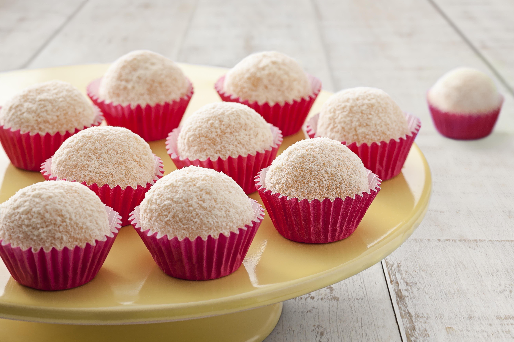
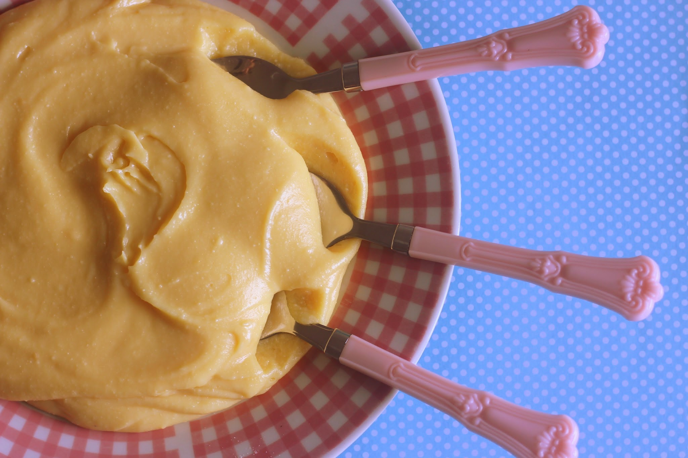

★ Receita de hoje: Brigadeiro de Leite Ninho!

Se você quer aprender como fazer esse brigadeiro delicioso de forma simples e caseira, nós vamos te mostrar uma receita deliciosa para você dividir com a família, amigos, ou para comer sozinho/a ;]
★ Playlist de Música Clássica para Cozinhar Seus Doces ★
★ Primeiro Passo: Separe os Ingredientes
Segue abaixo a descrição dos ingredientes:
- 01 caixa de leite condensado
- 04 colheres de sopa de leite em pó integral
- 01 colher de sopa de margarina (com ou sem sal)
★ Segundo Passo: Preparo
- (1) Em uma panela com o fogo desligado, coloque o leite condensado, o leite em pó e a margarina.
- (2) Misture bem os ingredientes até que a mistura fique lisa e sem grumos (pelotinhas).
- (3) Ligue o fogo baixo e continue mexendo o brigadeiro constantemente para não queimar.
- (4) Cozinhe até o brigadeiro começar a soltar do fundo da panela. Este é o ponto para um brigadeiro de colher.
- (5) Se quiser um brigadeiro para enrolar, deixe apurar um pouco mais para que fique mais grosso e firme.
- (6) Desligue o fogo e transfira o brigadeiro para uma travessa.
- (7) Leve à geladeira por cerca de 10 minutos para esfriar e atingir a textura desejada.
★ Essa receita é versátil e pode ser usada para recheio de bolo, brigadeiro de colher ou para fazer brigadeirinhos de aniversário!